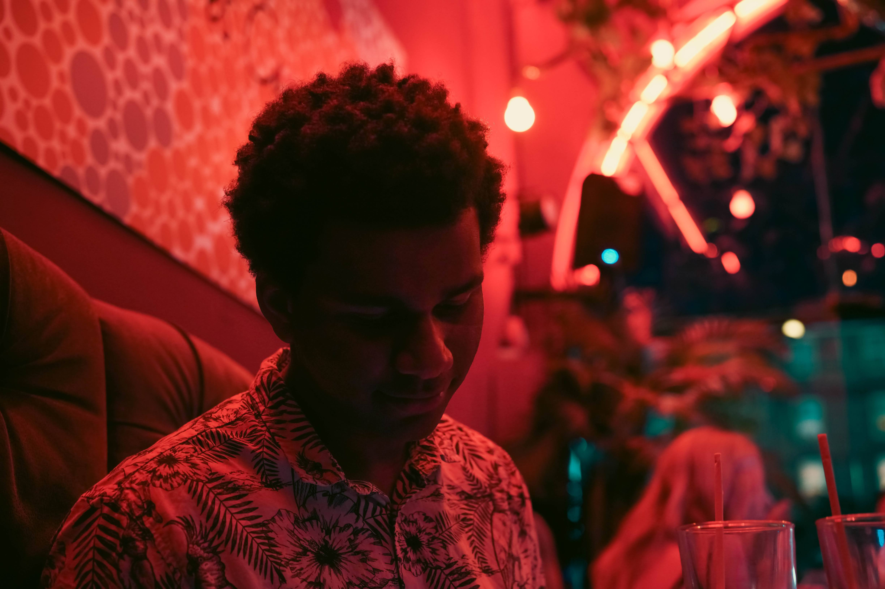
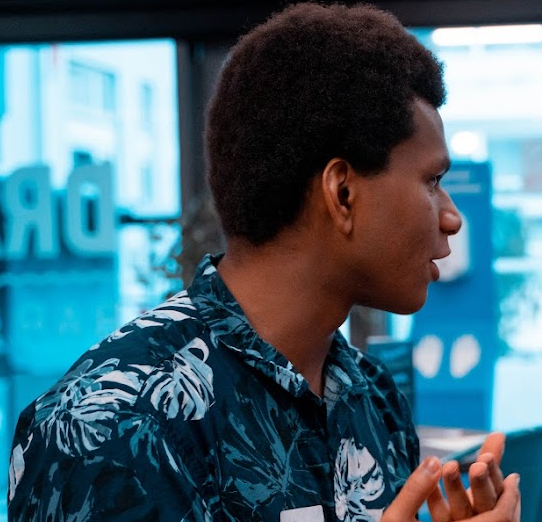

<!-- <!DOCTYPE html>
<html lang="en">
  <head>
    <meta charset="utf-8">
    <title>Jamal Haruna's Portfolio Website</title>
	<link href="reset.css" rel="stylesheet"/>
	<link href="stylesheet.css" rel="stylesheet"/>
  </head>
  <body>
	<header>
		<h1><strong> <a href="#">Jamal Haruna </a> </strong></h1>
		<h2> Full Time Computer Science Student at Queen Mary's University of London </h2>
	</header>

	<article class="main">
		<section class="Start">
			<h1 > <i> Welcome to my portfolio page </i> </h1>
		</section>
		<section id="AboutMe">
			<hr>
			<h1>  About Me</h1>
			<p> I am an undergraduate Computer Science student at Queen Mary University of London. 
			My journey with IT began at an early age, I was always infatuated with the latest video game consoles and loved to play around on our household computer. 
			Building from here, I began making small games and animations within Scratch. Inevitably I had learnt my first programming language, python, 
			and continued my studies within the subject. Eventually, I found myself on holiday learning JavaScript; 
			my dedication and passion for this subject had extended beyond just my academic work. </p>
			<p><strong>Skilled Areas: </strong>
			<ul>
				<li> Java </li>
				<li> Python </li>
				<li> HTML/CSS/JavaScript/PHP </li>
				<li> Oracle SQL/ MySQL </li>
				<li> Git </li>
				<li> Windows/Linux </li>
				<li> C# </li>
			</ul> </p>
		</section>
		
		<section id="Projects">
			<hr>
			<h1> My Projects </h1>
			<p> Some examples of projects I've worked on. More can be found on my <a href="https://github.com/Enopa">GitHub page </a>
			<ul>
				<li>
					<button id="Proj" onclick="location.href='https://github.com/Enopa/ferb-latin-translator';">
						<h2>Ferb-Latin Translator</h2> 
						<h3> July 2021 - September 2021 </h3>
						<p>A translator I developed for a fictional language. 
							Scripted in Java using AWT libraries for the GUI. 
							IntelliJ framework was utilized for this project. Agile Methodologies were used</p>
					</button>
				</li>
				<li>
					<button id="Proj" onclick="location.href='https://github.com/Enopa/Robo-Jump';">
						<h2>Robo Jump</h2> 
						<h3> October 2020 - December 2020 </h3>
						<p>A platforming game developed in Unity using C# libraries and published on itch.io. All assests were developed by me within various applications.
							Developed using agile methodologies
						</p>
					</button>
				</li>
				<li>
					<button id="Proj" onclick="location.href='https://github.com/Dil02/mentor-matcher';">
						<h2>Mentor Matcher Website</h2> 
						<h3> January 2022 - June 2022</h3>
						<p>A website developed utilising the Bootstrap framework as well as React. Firebase utilised within the backend. Allows users to sign up as a mentor or mentee
							and be paired suitably. Waterfall methodology utilised here. </p>
					</button>
				</li>
			</ul>
			<hr>
		</section>
		
		<section id="Education">
			<hr>
			<h1> Education </h1>
			<p> Below is a list of the about the forms of education I have recieved over the years </p>
			<table>
				<tr>
					<th> Institute </th>
					<th> Date</th>
					<th> Grades</th>
				</tr>
				<tr>
					<td> Stationers' Crown Woods Academy </td>
					<td> <strong> 2012-2018 </strong> </td>
					<td> An average of 8.1 within 10 GCSE's </td>
				</tr>
				<tr>
					<td> Townley Grammar School </td>
					<td> <strong>2018-2020</strong> </td>
					<td> Achieved an AAA within 3 A-Levels: Biology, Chemistry and Computer Science </td>
				</tr>
				<tr>
					<td> Queen Mary University of London</td>
					<td> <strong>2020-Current </strong></td>
					<td> On track to graduate with a first in 2023 </td>
				</tr>
			</table>
			<hr>
		</section>
		
		<section id="Experience">
			<hr>
			<h1> <strong>Experience </strong></h1>
			<p> Throughout my life I have had several work/life experiences that have provided me with many transferable skills. 
			These will be able to help me within the workplace </p>
			<ul>
				<li> <strong>Working as a secretary within a law firm </strong>
					<ul>
						<li>As I had to make phone calls, this developed my ability to have informative and polite conversations</li>
						<li>I had to take instruction from my boss and efficiently carry out tasks</li>
						<li>Managing workloads from various people in the office</li>
					</ul>
				</li>
				<li> <strong>Shop Assistant within a shop </strong>
				<ul>
						<li>Increased my ability to provide friendly service</li>
						<li>Developed my skills within quick maths and having to calculate prices efficiently</li>
						<li>Following instructions under pressure when the shop was incredibly busy</li>
					</ul>
				</li>
				<li><strong> Working as an inpedependant private tutor </strong>
				<ul>
						<li>Speaking to parents and providing infomative reports of their child's progress</li>
						<li>Teaching and being able to relay complext information in a digestable way</li>
						<li>Managing a timetable and booking different students in at different times</li>
					</ul>
				</li>
				<li> <strong>Achieved a Duke of Edingburgh Bronze Award</strong>
				<ul>
						<li>I learnt how to act as a lifeguard and can be resilient in pressuring situations</li>
						<li>Achieved a grade 2 in piano via this award</li>
						<li>Developed skills within searching for suitable charity work</li>
					</ul>
				</li>
				<figure>
				
				</figure>
			</ul>
			<hr>
		</section>
		
		<section id="Links">
			<hr>
			<h1> <strong>Links </strong></h1>
			<p> Additional Information about me and my projects can be found on the following pages: </p>
			<ul>
				<li><a href="https://github.com/Enopa"> Link to my github page </a></li>
				<li><a href="https://enopa.itch.io/"> Link to my itch.io page </a></li>
				<li><a href="https://www.linkedin.com/in/jamal-haruna-73007b214/">Link to my Linkedin page </a></li>
			</ul>
			<aside>
				<h3> Contact Details </h3>
				<p> Below are some areas in which you can easily get in touch with me </p>
				<p><strong>Phone Number: </strong>+44 7984 010215 </p>
				<p> <strong>E-mail:</strong> 03harunaj@gmail.com </p>
			</aside>
		</section>
		<hr>
	</article>
	<footer>
		<h2> Navigation </h2>
		<nav>
			<ul>
				<li> <a href="#AboutMe"> About Me </a></li>
				<li> <a href="#Projects"> My Projects </a> </li>
				<li> <a href="#Education">My Education </a></li>
				<li> <a href="#Experience">My Experience </a></li>
				<li> <a href="#Links">Links and Extras </a></li>
			</ul>
		</nav>
	</footer>
  </body>
</html> --!>
